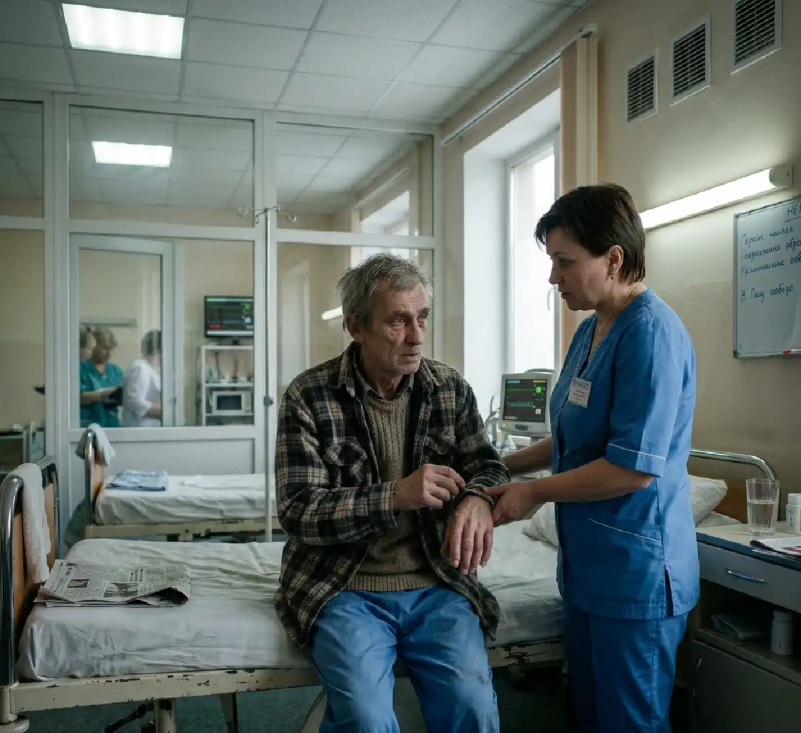

+38(068)
79 72 782
+38(068)
79 72 782Алкогольная энцефалопатия
Шаг до необратимых изменений


Бесплатная консультация, работаем круглосуточно 24/7
Шаг до необратимых изменений

Дата написания: 12 апр. 2026 г.
Последнее обновление: 12 апр. 2026 г.
Алкогольная энцефалопатия — это тяжелое и опасное заболевание головного мозга, которое развивается на фоне длительного употребления алкоголя и хронической интоксикации организма. Под воздействием токсичных продуктов распада спирта происходит постепенное разрушение нервных клеток, нарушаются обменные процессы в тканях мозга и ухудшается передача нервных импульсов. В результате страдают когнитивные функции, поведение и общее психоэмоциональное состояние человека.
На начальных этапах алкогольная энцефалопатия может проявляться малозаметно, поэтому многие пациенты игнорируют первые симптомы, списывая их на усталость, стресс или последствия запоя. Однако в этот период уже происходят серьезные патологические изменения, которые без лечения продолжают прогрессировать. Постепенно ухудшается память, снижается концентрация внимания, появляются изменения в поведении и нарушается координация движений. При алкогольной энцефалопатии страдают ключевые функции мозга: мышление становится замедленным, нарушается способность к анализу и принятию решений, ухудшается эмоциональная стабильность. Без своевременного лечения заболевание прогрессирует и может привести к необратимым последствиям, включая выраженное снижение интеллекта, развитие психических расстройств, потерю самостоятельности и инвалидность. Именно поэтому важно знать основные признаки алкогольной энцефалопатии и при первых тревожных симптомах не откладывать обращение за медицинской помощью.
Одним из ранних и наиболее характерных признаков алкогольной энцефалопатии является нарушение памяти и снижение концентрации внимания. Человек начинает забывать недавние события, испытывает трудности с запоминанием новой информации, теряет нить разговора и не может сосредоточиться на привычных задачах. Постепенно ухудшается способность к обучению, замедляется мышление, снижается логика и способность принимать решения.
На этом этапе могут появляться ошибки в повседневных действиях, снижается продуктивность, становится сложнее выполнять даже простые задачи, требующие внимания и последовательности. Окружающие часто замечают рассеянность, забывчивость и изменение поведения, однако сам пациент не всегда осознает серьезность происходящих изменений.
Такие симптомы связаны с поражением структур головного мозга, отвечающих за когнитивные функции, в частности за память, внимание и мышление. Под воздействием алкоголя нарушается питание нервных клеток, ухудшается их работа и постепенно происходит их разрушение. К сожалению, именно на этом этапе многие игнорируют проблему или откладывают обращение к врачу, что приводит к дальнейшему прогрессированию заболевания.
Алкогольная энцефалопатия нередко проявляется выраженными нарушениями ориентации в пространстве и времени. Пациент начинает путать даты, не может точно назвать текущий день или время, теряется даже в знакомой обстановке, забывает, где находится и как туда попал. Могут возникать кратковременные провалы в памяти, эпизоды дезориентации и ощущение «затуманенности» сознания, когда человеку сложно сосредоточиться и адекватно воспринимать происходящее.
По мере прогрессирования заболевания такие нарушения становятся более частыми и выраженными. Человеку становится трудно ориентироваться даже в привычных бытовых ситуациях, ухудшается способность воспринимать, анализировать и запоминать информацию, снижается контроль над собственными действиями. Пациент может выглядеть растерянным, неуверенным, иногда не узнает знакомых людей или не понимает, что происходит вокруг. В некоторых случаях возникают эпизоды выраженной спутанности сознания, тревожности, паники или неадекватного поведения. Подобные симптомы свидетельствуют о более глубоком поражении головного мозга и серьезных нарушениях работы центральной нервной системы. Это уже не начальная стадия, а признак прогрессирующего патологического процесса, при котором страдают важнейшие функции мозга.
При развитии алкогольной энцефалопатии поведение человека претерпевает выраженные изменения, которые становятся заметны как самому пациенту, так и его окружению. На ранних этапах может появляться повышенная раздражительность, вспыльчивость, агрессивные реакции на привычные ситуации, а также тревожность и внутреннее напряжение. В других случаях, напротив, наблюдается апатия, безразличие к происходящему, утрата интереса к работе, общению и повседневной жизни. Эмоциональное состояние становится нестабильным: возможны резкие перепады настроения, склонность к депрессивным переживаниям, чувство усталости и опустошенности.
По мере прогрессирования заболевания поведенческие нарушения усиливаются. Человек может терять самоконтроль, становиться импульсивным, неадекватно реагировать на окружающие события. Снижается критичность к своему состоянию, ухудшается способность объективно оценивать происходящее и принимать взвешенные решения. Возникают трудности в общении, частые конфликты с близкими, постепенно формируется социальная изоляция. Пациент может перестать выполнять свои обязанности, утрачивает интерес к прежним ценностям и привычному образу жизни.
Дополнительно могут наблюдаться выраженные психоэмоциональные расстройства: тревожно-депрессивные состояния, повышенная подозрительность, страхи, чувство беспокойства без явной причины. В более тяжелых случаях возможны эпизоды дезориентации, неадекватного поведения и даже психотические проявления, что значительно ухудшает качество жизни и требует срочного вмешательства специалистов. Изменения обусловлены нарушением работы центральной нервной системы и токсическим воздействием алкоголя на головной мозг. Под влиянием алкоголя повреждаются нейроны, нарушается баланс нейромедиаторов, страдают структуры мозга, отвечающие за эмоции, поведение и самоконтроль. В результате человек постепенно теряет способность управлять своим состоянием и адекватно взаимодействовать с окружающим миром.
Еще одним характерным симптомом алкогольной энцефалопатии является выраженное ухудшение координации движений и нарушение двигательных функций. Пациент становится неустойчивым, появляется шаткость походки, ощущение «неуверенности» при движении, могут возникать частые спотыкания и трудности при удержании равновесия. Даже при ходьбе по ровной поверхности человек может отклоняться в стороны, ощущать слабость в ногах и потерю контроля над движениями. Движения становятся менее точными, замедленными и несогласованными, ухудшается мелкая моторика, из-за чего становится сложно выполнять даже простые действия, требующие точности, например писать, застегивать пуговицы, пользоваться телефоном или удерживать предметы в руках.
Нередко наблюдается дрожь в руках, особенно при попытке выполнить целенаправленное движение, а также общее ощущение слабости, нестабильности и «ватности» в теле. Со временем пациенту становится трудно выполнять привычные бытовые действия, требующие координации и контроля. В более тяжелых случаях возможны выраженные нарушения равновесия, при которых человек не может уверенно стоять или передвигаться без посторонней помощи. По мере прогрессирования состояния нарушения координации усиливаются, движения становятся все более хаотичными и плохо контролируемыми, что значительно повышает риск падений, травм и бытовых несчастных случаев. Это не только ухудшает качество жизни, но и создает дополнительную угрозу для здоровья.
Изменения связаны с поражением мозжечка и других отделов головного мозга, отвечающих за координацию, равновесие и двигательную активность. Под воздействием алкоголя нарушается работа нервных связей, ухудшается передача импульсов между нейронами, что приводит к сбоям в согласованности движений и потере точности. Постепенно страдают сложные двигательные навыки, снижается скорость реакции и способность к адаптации. Без своевременного лечения эти нарушения продолжают прогрессировать, становятся более выраженными и со временем могут приобретать необратимый характер.
Алкогольная энцефалопатия часто сопровождается выраженными и стойкими нарушениями сна, которые значительно ухудшают общее состояние пациента и ускоряют прогрессирование заболевания. Человек может страдать от бессонницы, трудностей с засыпанием, частых ночных пробуждений, тревожных снов или поверхностного, прерывистого сна. Даже при достаточной продолжительности сна он не приносит ощущения отдыха, и уже утром сохраняется выраженная усталость, слабость и чувство разбитости.
Со временем нарушается естественный циркадный ритм — биологические часы организма перестают работать правильно. Пациент может путать день и ночь, испытывать сонливость днем и бодрствование ночью, что еще больше истощает нервную систему. Постепенно ухудшается концентрация внимания, снижается скорость мышления, усиливаются проблемы с памятью и эмоциональной стабильностью. Человек становится раздражительным, тревожным, иногда возникают эпизоды подавленности или апатии. Нарушения сна напрямую связаны с токсическим воздействием алкоголя на центральную нервную систему. Алкоголь разрушает нейронные связи, влияет на выработку нейромедиаторов, регулирующих сон, и нарушает фазовую структуру сна, лишая организм глубоких восстановительных стадий. В результате мозг не получает необходимого восстановления, а процессы регенерации существенно замедляются.
Хроническая усталость, возникающая на фоне таких нарушений, усиливает негативное воздействие алкоголя и ускоряет разрушение нервных клеток. Организм теряет способность полноценно восстанавливаться, снижается иммунитет, ухудшается работа внутренних органов. Это создает замкнутый круг: чем хуже сон — тем быстрее прогрессирует заболевание, и тем тяжелее становятся симптомы. В более тяжелых случаях нарушения сна могут сопровождаться ночной тревожностью, страхами, спутанностью сознания, а иногда и эпизодами дезориентации. Это уже указывает на выраженное поражение головного мозга и требует срочного медицинского вмешательства.
Основной причиной развития алкогольной энцефалопатии является длительное и систематическое употребление алкоголя, приводящее к хронической интоксикации организма. Под воздействием токсичных продуктов распада спирта нарушается питание клеток головного мозга, ухудшается кровообращение и обменные процессы, снижается поступление кислорода и необходимых питательных веществ. В результате нервные клетки постепенно повреждаются и разрушаются, что приводит к нарушению когнитивных функций, поведения и координации. Особую роль играет дефицит витаминов, прежде всего витаминов группы B, особенно тиамина (витамина B1), который необходим для нормальной работы нервной системы. При хроническом употреблении алкоголя нарушается его всасывание и усвоение, что приводит к дополнительному повреждению мозга и ускоряет развитие патологических изменений.
Существуют факторы, которые значительно повышают риск развития алкогольной энцефалопатии и ускоряют ее прогрессирование. К ним относятся длительные запои, при которых организм постоянно находится в состоянии интоксикации, а также регулярное употребление алкоголя даже без выраженных перерывов. Немаловажную роль играет плохое питание, при котором организм не получает достаточного количества витаминов и микроэлементов, необходимых для нормального функционирования мозга. Дополнительным фактором риска является выраженный дефицит витаминов, особенно группы B, который усиливает поражение нервной системы. Также негативное влияние оказывают хронические заболевания, ослабляющие организм и снижающие его способность к восстановлению. В совокупности эти факторы создают условия для быстрого прогрессирования заболевания и увеличивают вероятность развития тяжелых и необратимых последствий.
Алкогольная энцефалопатия — это тяжелое прогрессирующее заболевание головного мозга, которое при отсутствии своевременного лечения приводит к глубоким и зачастую необратимым изменениям. Под воздействием хронической алкогольной интоксикации происходит постепенное разрушение нервных клеток, нарушаются нейронные связи и ухудшается работа всех отделов центральной нервной системы. В результате страдают память, мышление, внимание, эмоциональная стабильность и способность человека к нормальной жизни.
По мере прогрессирования заболевания снижается интеллект, ухудшается способность к обучению и принятию решений, нарушается ориентация в пространстве и времени. Человек становится зависимым от помощи окружающих, теряет навыки самообслуживания и постепенно утрачивает социальную адаптацию. Изменения затрагивают не только когнитивную сферу, но и личностные качества: могут развиваться выраженные психоэмоциональные нарушения, включая тревожные и депрессивные состояния, агрессивное поведение или апатию.
Алкогольная энцефалопатия может приводить к ряду тяжелых осложнений. Среди них — необратимые структурные изменения головного мозга, выраженная потеря памяти вплоть до амнезии, развитие психических расстройств, значительное снижение когнитивных функций и интеллекта. В более запущенных случаях пациент утрачивает способность к самостоятельному передвижению и обслуживанию, что приводит к инвалидизации и необходимости постоянного ухода. Дополнительно заболевание может осложняться нарушениями работы других органов и систем. Из-за токсического воздействия алкоголя страдают сердечно-сосудистая система, печень и обмен веществ, что еще больше ухудшает общее состояние пациента. Нарушения координации и сознания увеличивают риск падений, травм и бытовых несчастных случаев. Снижение иммунитета делает организм более уязвимым к инфекциям.
Для постановки диагноза алкогольной энцефалопатии проводится комплексное и поэтапное обследование, которое позволяет максимально точно оценить степень поражения головного мозга и общее состояние организма. Диагностика начинается с подробного сбора анамнеза: врач уточняет длительность и частоту употребления алкоголя, наличие запоев, особенности питания, перенесенные заболевания и жалобы пациента. Уже на этом этапе можно заподозрить развитие патологических изменений, связанных с хронической интоксикацией. Далее проводится тщательная оценка неврологического статуса. Врач анализирует когнитивные функции — память, внимание, мышление, способность к ориентации в пространстве и времени. Оцениваются речь, координация движений, устойчивость, рефлексы и психоэмоциональное состояние. Часто выявляются характерные нарушения: снижение концентрации, дезориентация, изменения поведения, проблемы с координацией и мелкой моторикой.
Лабораторные исследования играют важную роль в подтверждении диагноза и оценке общего состояния организма. Они позволяют выявить признаки хронической алкогольной интоксикации, дефицит витаминов, особенно группы B (в первую очередь тиамина), а также нарушения функции печени, обмена веществ и электролитного баланса. Эти показатели помогают понять глубину поражения и степень вовлечения различных систем организма. Инструментальные методы диагностики дополняют клиническую картину. Чаще всего используются магнитно-резонансная томография (МРТ) или компьютерная томография (КТ) головного мозга, которые позволяют обнаружить структурные изменения, участки атрофии, нарушения кровообращения и другие признаки поражения нервной ткани. Эти методы также помогают исключить другие заболевания с похожей симптоматикой, такие как опухоли, инсульты или травматические повреждения.
В ряде случаев требуется консультация смежных специалистов — невролога, психиатра, терапевта, а также проведение дополнительных исследований для уточнения диагноза. Комплексный подход позволяет не только подтвердить наличие алкогольной энцефалопатии, но и определить стадию заболевания, степень поражения мозга и общее состояние пациента, что крайне важно для выбора правильной тактики лечения. Ранняя диагностика имеет решающее значение. На начальных стадиях патологические изменения могут быть частично обратимыми, и своевременно начатое лечение позволяет значительно замедлить прогрессирование заболевания, улучшить когнитивные функции и общее состояние пациента. При запущенных формах изменения в головном мозге становятся стойкими, а возможности восстановления существенно снижаются. Именно поэтому при появлении первых симптомов — ухудшении памяти, нарушении координации, изменении поведения или проблемах со сном — важно не откладывать обращение к врачу.
Лечение алкогольной энцефалопатии должно быть комплексным, поэтапным и обязательно проводиться под контролем специалистов. Основная задача терапии — как можно быстрее остановить токсическое воздействие алкоголя на организм, устранить последствия хронической интоксикации и максимально восстановить функции головного мозга и нервной системы. Важнейшим условием успешного лечения является полный отказ от употребления алкоголя, без которого любые медицинские мероприятия будут малоэффективны.
Первым этапом проводится детоксикация организма, направленная на выведение токсичных продуктов распада алкоголя и снижение нагрузки на внутренние органы. Это позволяет стабилизировать состояние пациента, улучшить общее самочувствие и подготовить организм к дальнейшему восстановлению. Параллельно проводится коррекция водно-солевого и кислотно-щелочного баланса, что особенно важно при длительной интоксикации. Следующий этап включает восстановление обменных процессов и восполнение дефицита жизненно важных веществ. Особое значение имеет витаминотерапия, в первую очередь назначение витаминов группы B, особенно тиамина, который играет ключевую роль в работе нервной системы и предотвращении дальнейшего повреждения мозга. Дополнительно могут применяться препараты, улучшающие метаболизм и кровообращение в тканях головного мозга.
Неотъемлемой частью лечения является поддержка нервной системы. Используются медикаментозные средства, направленные на улучшение когнитивных функций, снижение тревожности, нормализацию сна и стабилизацию психоэмоционального состояния пациента. В зависимости от клинической картины врач может назначать индивидуальную медикаментозную терапию, учитывая степень поражения и общее состояние организма.
Комплексный подход позволяет воздействовать сразу на несколько звеньев патологического процесса, замедлить прогрессирование заболевания и в ряде случаев частично восстановить утраченные функции. Однако эффективность лечения напрямую зависит от своевременности его начала. Чем раньше начато лечение алкогольной энцефалопатии, тем выше шанс остановить разрушение нервных клеток, предотвратить развитие необратимых изменений и сохранить качество жизни пациента.
Профилактика алкогольной энцефалопатии основана прежде всего на полном отказе от употребления алкоголя или значительном ограничении его потребления. Именно прекращение токсического воздействия является ключевым фактором, позволяющим предотвратить повреждение клеток головного мозга и сохранить функции нервной системы. Не менее важную роль играет нормализация питания: рацион должен быть полноценным, сбалансированным и богатым витаминами, особенно группы B, которые необходимы для нормальной работы мозга.
Особое внимание следует уделять своевременному обращению за медицинской помощью при первых признаках ухудшения памяти, координации или общего самочувствия. Регулярное наблюдение у специалистов позволяет выявить ранние изменения и предотвратить развитие тяжелых осложнений. Также важно восполнять дефицит витаминов и микроэлементов, поддерживать работу печени и контролировать общее состояние здоровья. Восстановление после алкогольной энцефалопатии требует времени, терпения и комплексного подхода. Оно включает не только медикаментозное лечение, но и изменение образа жизни, восстановление режима сна, питания и психоэмоционального состояния. На ранних стадиях при своевременно начатом лечении возможно значительное улучшение самочувствия, частичное восстановление когнитивных функций и замедление прогрессирования заболевания.
При появлении первых признаков алкогольной энцефалопатии крайне важно не откладывать обращение к специалисту, так как на ранних стадиях заболевание еще поддается коррекции и есть возможность замедлить его развитие. Ухудшение памяти, снижение концентрации внимания, нарушение координации движений, изменения поведения, повышенная тревожность и проблемы со сном — это серьезные сигналы, указывающие на поражение головного мозга, которые нельзя игнорировать. Многие пациенты склонны недооценивать эти симптомы или списывать их на усталость, стресс или последствия употребления алкоголя, однако именно в этот период происходит активное прогрессирование патологических изменений. Без медицинской помощи состояние может быстро ухудшаться, приводя к стойким нарушениям когнитивных функций, эмоциональной нестабильности и утрате способности к самостоятельной жизни.
Своевременное обращение за медицинской помощью позволяет провести диагностику, определить степень поражения мозга и начать комплексное лечение. Это дает возможность остановить дальнейшее разрушение нервных клеток, частично восстановить утраченные функции и предотвратить развитие тяжелых осложнений. Наши специалисты оказывают помощь в таких городах, как (Киев | Харьков | Одесса | Днепр | Львов | Запорожье | Черкассы) и других населенных пунктах. Мы работаем круглосуточно и готовы оперативно прийти на помощь в любой ситуации. Чем раньше начато лечение, тем выше шанс сохранить функции головного мозга, улучшить качество жизни пациента и избежать необратимых последствий.
Алкогольная энцефалопатия — это тяжелое и опасное заболевание, которое приводит к постепенному разрушению головного мозга и нарушению жизненно важных функций организма. Без своевременного лечения патологические изменения прогрессируют, ухудшается память, мышление, координация и психоэмоциональное состояние. Игнорирование симптомов и продолжение употребления алкоголя значительно ухудшают прогноз и повышают риск развития необратимых последствий, включая инвалидность и угрозу для жизни.
Важно понимать, что на ранних стадиях заболевание еще поддается коррекции, и своевременное обращение за медицинской помощью может остановить разрушительные процессы, стабилизировать состояние и частично восстановить функции мозга. Комплексный подход к лечению позволяет не только устранить последствия интоксикации, но и значительно улучшить качество жизни пациента.
Обратитесь за помощью уже сейчас: +38(050-021-69-57)

Статья проверена экспертом
Могучев Станислав
Врач терапевт
Возможно интересная статья:
Янтарная кислота, Бетаргин и Энтеросгель при алкогольной интоксикации

Да, мы строго соблюдаем полную конфиденциальность на всех этапах лечения. Информация о пациенте, диагнозе и прохождении терапии не передаётся третьим лицам. Обращение к нам не влечёт постановку на учёт. Вы можете быть уверены в безопасности и анонимности.
Программа лечения разрабатывается индивидуально после консультации со специалистом. Учитываются вид зависимости, её длительность, физическое и психологическое состояние пациента. Такой подход позволяет повысить эффективность терапии и снизить риск срыва. Мы не используем шаблонные решения.
Да, мы сопровождаем пациентов и после основного курса лечения. Проводятся консультации, рекомендации по адаптации и профилактике рецидивов. При необходимости возможна дальнейшая психологическая поддержка. Это помогает сохранить результат и вернуться к полноценной жизни.
Номер телефона:
+380 (68) 797 27 82
+380 (50) 021 69 57
Адрес наркологического центра вашего города уточняйте по
телефону
Работаем в: Киеве, Одессе, Львове, Харькове, Днепре,
Запорожье, Черкассах, Чугуеве, Черноморске, Каменском
Telegram: t.me/umbrellaplus
График работы: Круглосуточно